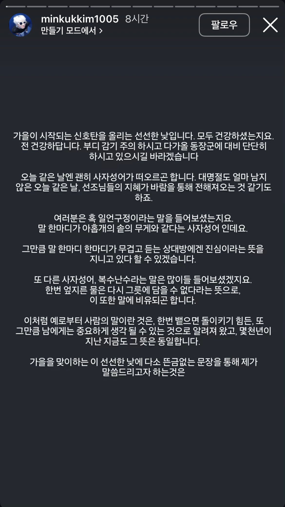
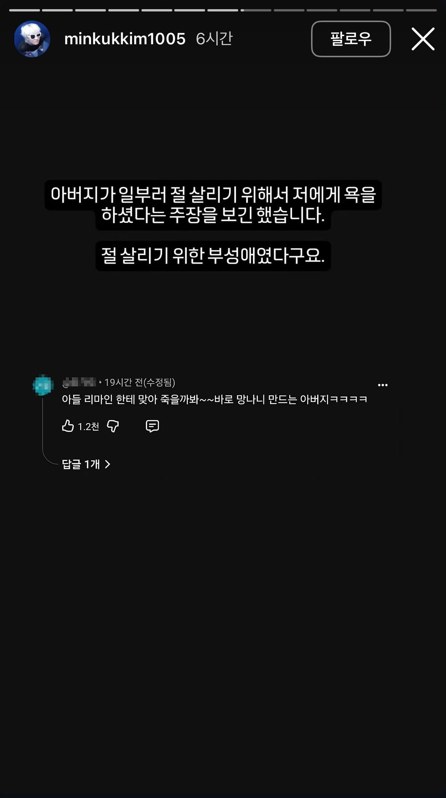

175 · 4 · 10 시간 전 · 원문
발단


수집 당시 댓글 4개
리사수 · 33 분 전
순수하게 필력으로 웃기네 ㅋㅋㅋㅋㅋㅋ 미친재능ㅋㅋㅋㅋㅋㅋ
nhdta · 14 분 전
그래 원이랑 결혼하고 좀 맞는게 낫지 ㅋㅋㅋㅋ
겨즙 · 6 분 전
기승전결 끝부분까지 깔끔하게 마무리짓네 ㅋㅋㅋ 겁나 잘컷네
번째개헌 · 6 분 전
ㅋㅋㅋㅋ
순수하게 필력으로 웃기네 ㅋㅋㅋㅋㅋㅋ 미친재능ㅋㅋㅋㅋㅋㅋ